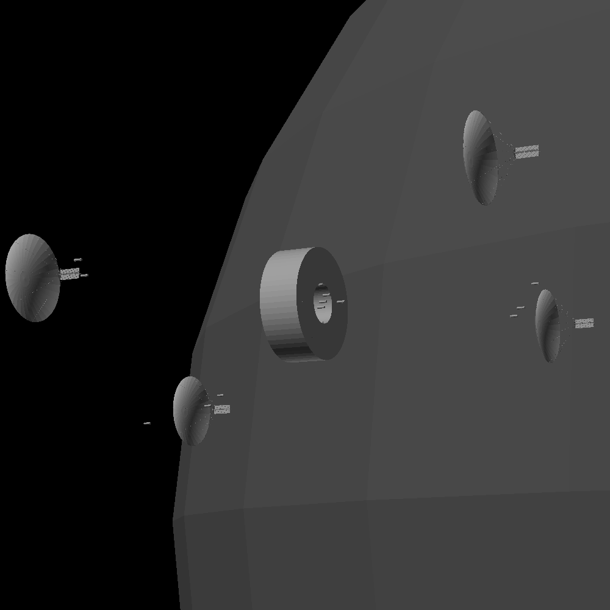

placeholder
placeholder


| Finespun growth rate | |||
|---|---|---|---|
| date | solar arrays | power generation target | kardashev level |
| 15 000 000 000 | 1 | 250kW | -0.06 |
| 15 063 000 000 | 4 | 1MW | 0 |
| 15 198 400 000 | 80 | 20MW | 0.13 |
| 15 312 715 000 | 1000 | 250MW | 0.24 |
| 15 416 952 000 | 10 000 | 2.5GW | 0.34 |
| 15 469 607 000 | 32 000 | 8GW | 0.39 |
| 15 569 607 000 | 43 177 | 10.794GW | 0.40 |
| 15 669 607 000 | 58 258 | 14.565GW | 0.42 |
| 15 769 607 000 | 78 606 | 19.652GW | 0.43 |
| 15 869 607 000 | 106 062 | 26.516GW | 0.44 |
| 15 969 607 000 | 143 108 | 35.777GW | 0.46 |
| 16 069 607 000 | 193 093 | 48.273GW | 0.47 |
| 16 169 607 000 | 206 538 | 65.134GW | 0.48 |
| 16 269 607 000 | 315 539 | 87.885GW | 0.49 |
| 16 312 716 000 | 400 000 | 100GW | 0.5 |
| 160278 Finespun | |
|---|---|
| physical characteristics | |
| mean radius | 5552.5m |
| mean density | 3012kg/m^3 |
| mass | 2.159E+15kg |
| surface gravity | 4.674 mm/s2 |
| surface escape velocity | 7.2 m/s |
| albedo | 0.047 |
| keplerian elements | |
| semi-major axis (a) | 3.1407431 AU |
| eccentricity (e) | 0.2014501 |
| inclination (i) | 16.07761 deg |
| ascending node (Ω) | 247.31 deg |
| argument of perihelion (ω) | 160.866 deg |
| anomaly (M) | 35.982 deg |
| other orbital characteristics | |
| Perihelion | 2.5080402 AU |
| Apohelion | 3.773 AU |
| orbital period | 1.7565E+8 s ≈ 5.566 terran years |
| avg. orbital velocity | 16.807 km/s |
| other | |
| hill sphere radius at parahelion | 30 756 m |
| hill sphere radius at apohelion | 46 134 m |
| insolation at parahelion | 216.39W/m2 |
| insolation at semi-major axis | 137.99W/m2 |
| insolation at apohelion | 91.617W/m2 |
| equalibrium temperature | 157K = -116.15oC |
| alert noise sample | example case recording |
| Task | Reason |
|---|---|
Specifying tasks is the most basic element of every plan |
Explaining why something is being done has a tendency to convey a lot of important information about how it should be done and what to do in case of unexpected events or circumstances |
| Coordination | Context |
Communication about tasks has an excessively large effect on the overall quality of work and ensuring it can happen is critical enough and hard enough to deserve its own field. Others must know what you're going to do even when they cannot see or contact you |
Intelligent agents tend to organize randomly, and often end up with strange gaps in their knowledge and especially can miss information that is so obvious that nobody bothers to mention it explicitly, so providing even random semi-relevant scraps of information will stop these gaps from accumulating to the point of failure |